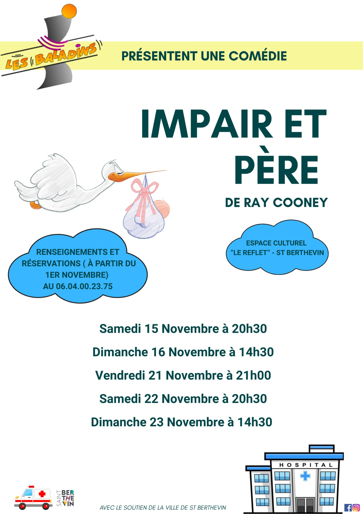
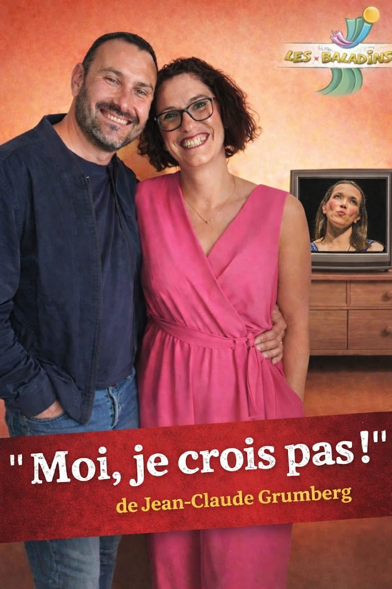

Nos Événements
- Notre Pièce : Impair et Père de Ray Cooney.
- La Nuit du Théâtre
- Une courte pièce. En ce moment : Moi je crois pas ! de Jean-Claude Grumberg.
Saison 2025-2026 : Impair et Père
Une comédie de Ray Cooney.
"Impair et père" est une comédie pleine de quiproquos. On suit Pierre Jouffroy, un éminent chirurgien, sur le point de donner une conférence très importante devant 300 chirurgiens du monde entier. Il pourrait ainsi obtenir une belle promotion. Mais tout se complique lorsqu'une ancienne infirmière réapparaît : il découvre qu'il a un fils caché âgé de 18 ans, dont il ignorait l'existence. Pour éviter le scandale, il invente des mensonges et entraîne ses collègues et son entourage dans une série de situations absurdes.
Dans cette pièce, on retrouve tous les ingrédients typiques du théâtre de boulevard : les malentendus, les portes qui claquent, les identités cachées et l'accumulation de gags.

Nuit du Théâtre 2026
Nous sommes heureux de pouvoir vous retrouver pour une nouvelle Nuit du Théâtre... Nous vous accueillerons avec grand plaisir pour partager un moment de théâtre et de convivialité avec les compagnies.
Samedi 4 avril 2026
Réservation à partir du 25 mars 2026
☎ 06 04 00 23 75

Représentations extérieures :
Moi, je crois pas ! (Jean-Claude Grumberg)
Impair et Père (Ray Cooney)
Après avoir présenté la pièce de la saison à notre public Berthevinois, nous jouons pour des associations dans d'autres communes de la Mayenne voire des départements limitrophes.
En général, nous jouons le samedi soir au profit d'une association qui souhaite animer sa commune. Notre équipe technique vérifie la taille de la scène et aussi l'alimentation électrique pour pouvoir assurer le spectacle. Ensuite, nous convenons d'une date de représentation et nous établissons un contrat entre les deux associations. Votre manifestation sera annoncée sur notre site.
Le jour du spectacle, l'équipe technique arrive en fin de matinée ou début d'après-midi pour monter les décors et les lumières. Les acteurs arrivent en fin d'après-midi pour se familiariser avec la scène, les coulisses et effectuer une répétition.
En fin de spectacle, tout est démonté.
Pour en savoir plus, notamment sur nos tarifs de déplacement, prenez contact avec le secrétaire de l'association au 06 74 00 55 48 ou par mail : les.baladins.stb@gmail.com
